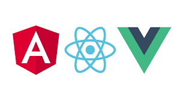

Guide to learning Frontend Web Development - part 3

Phase 3: Solidify
Note: At this point, you should be comfortable with building anything as a front end developer. You should also spend a few hours focussing on making money on the side with what you’ve learnt so far.
Check out this article related to start making money as a Frontend Web developer.
Quick recap on your set of skills
You should be an expert at writing Html and CSS
You should be know javascript well and be able to solve most javascript coding problems.
You should be comfortable working with Apis.
You should be comfortable with Firebase and know how to deploy your site.
Note: In case you forgot some of the items mentionned in the list, don't worry. It’s normal. It’s impossible to retain everything. Instead, you should focus more on learning on the fly as needed.
Important: Keep solving 1 js coding challenge a day.
Phase 3
Note: The items mentionned in Phase 3 should be learnt in parallel with earning money as a Frontend Developer.
1. Go deeper with CSS and JS (2 weeks)
Relearn Flexbox and Grid
Start learning about css animations (keyframes). Practice.
Build a couple of projects (simple js components, tooltips, todolist, sliding navbar, ...)
2. Learn about basics of CSS design patterns: duration 3 days
Start with BEM. there are more design patterns but you will learn it as needed.
Starts using bem style of writing css. You’ll feel like a premium developer.
3. Learn the basics of Javascript design patterns. (duration 5 days)
Focus on the basics. (singleton, module, revealing module, ...) :
Note: You will forget most of these. However, it will be easier to re-learn them on the fly as needed. (Design patterns depend on what you are trying to build)
4. Study Data structures and Algorithms.
This will make you become a better developer.
Spend 1 hour a day for a period of 1 week. After that stick to 30 mins a day.
Note: Keep learning Data Structures and Algorithms
Apply them to your coding problems.
You are now a Pro
You should be able to build anything related to Frontend Web Development.
Time to learn a Framework

Which Framework to learn? Angular, React, Vue, ... So many options !!!
Check out the Guide to learning Frontend Web Development - part 4 to see which one to learn and why.